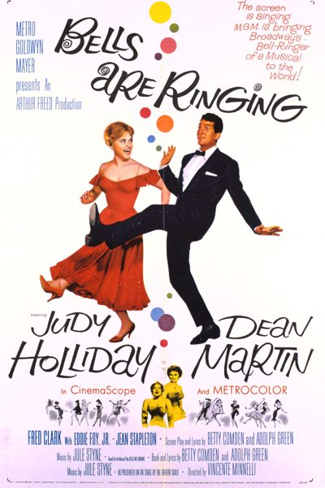

Bells Are Ringing

Starring: Judy Holliday, Dean Martin, Jean Stapleton
Director: Vincente Minnelli
Writer: Adolph Green, Herbert Lichtenfeld, Betty Comden
Producer: Arthur Freed
Bells Are Ringing is a 1960 American romantic comedy-musical film directed by Vincente Minnelli and starring Judy Holliday and Dean Martin. Based on the successful 1956 Broadway production of the same name by Betty Comden, Adolph Green and Jule Styne, the film focuses on Ella Peterson, based on the life of Mary Printz, who works in the basement office of a telephone answering service.
Trivia
- Nominated for: Academy Award for Best Original Musical Score.
- Judy Holliday and Jean Stapleton reprised their stage roles for the film.
- Jazz musician Gerry Mulligan, Holliday's real-life ex-lover, plays her disastrous blind date in a cameo role.
- Bells Are Ringing was Holliday's final film.
Previous Showings
8 Runs • 6 Festivals
8,438 tickets sold
All runs on record (8):
- July 27 - 29, 1990 · 1,758 ticketsw/ Brigadoon
- July 29 - August 1, 1995 · 1,537 ticketsw/ It Should Happen to You
- November 23 - 24, 2002 · 661 ticketsFall Folliesw/ It Should Happen to You
- June 18 - 20, 2006 · 687 ticketsRonald Colmanw/ Kiki, Kismet
- June 22 - 24, 2007 · 1,404 ticketsKatharine Hepburnw/ Desk Set
- September 1 - 3, 2010 · 648 ticketsSummer 2010w/ The Solid Gold Cadillac
- September 2 - 4, 2015 · 655 ticketsSummer 2015: Forty Classics from the Golden Age, including Kurosawa in Augustw/ It Should Happen to You
- August 22 - 25, 2024 · 1,088 ticketsDirected by Vincente Minnelliw/ Some Came Running